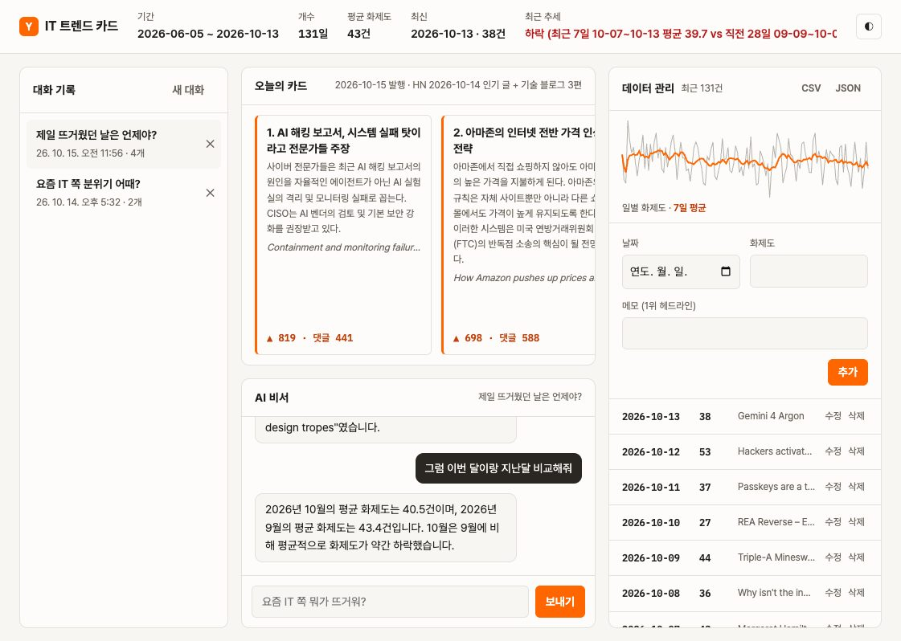

사이트(ai-trend-cards.vercel.app)에 보이는 영역 9개가 각각 무엇이고, 무엇을 누르면 되는지 정리했습니다. 캡처의 번호 박스나 아래 카드를 누르면 서로 짝이 강조됩니다.

저장된 데이터 전체를 한 줄로 요약합니다. AI 비서도 이 숫자를 보고 답합니다.
GET /api/data/summary
밝은 화면과 어두운 화면을 바꿉니다. 고른 값은 브라우저에 저장돼서 다음에 열어도 유지됩니다.
AI 비서와 나눈 대화가 자동으로 쌓이는 곳입니다. 제목은 첫 질문입니다.
GET·DELETE /api/conversations
매일 오전 8시에 자동으로 바뀌는 카드뉴스입니다. 디스코드에 올라가는 것과 같은 내용입니다. 옆으로 스크롤하면 8장이 있습니다.
GET /api/cards/latest
저장된 화제도 데이터를 근거로 답하는 채팅입니다. 비어 있을 때는 추천 질문 버튼 3개가 보입니다.
POST /api/chat
전체 데이터를 파일로 받습니다. CSV는 엑셀에서 바로 열리고 한글이 깨지지 않습니다. 열은 date, value, memo입니다.
날짜별 화제도 흐름입니다. 왼쪽이 가장 오래된 날, 오른쪽이 최신입니다.
하루치 데이터를 직접 넣는 곳입니다. 평소에는 매일 아침 자동으로 한 줄씩 들어오니 손댈 일이 거의 없습니다.
POST /api/data
저장된 날짜별 기록입니다. 최신 날짜가 위에 있습니다. 한 줄은 날짜 · 화제도 · 그날 1위 글 제목입니다.
PUT·DELETE /api/data/{date}
알람처럼 매일 아침 서버에 "오늘 카드 만들어" 요청을 보냅니다.
HN 인기 글과 블로그 새 글을 모으고, GPT로 한국어 요약을 만들고, 그저께 화제도 1줄을 데이터에 추가합니다.
카드를 DB에 저장하고 디스코드 채널에 올립니다. 같은 날 다시 불러도 두 번 올라가지 않습니다.
열 때마다 서버에서 최신 요약·카드·기록을 받아 보여 줍니다.